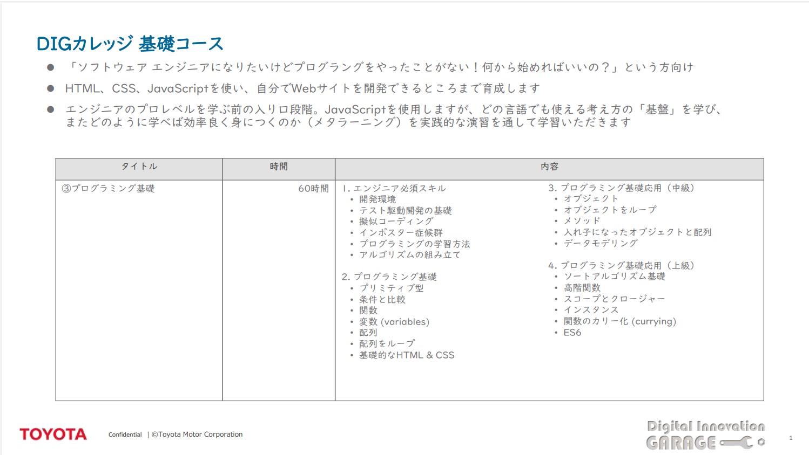

2.基礎コース内容
・HTML、CSS、JavaScriptを使い、自分でWebサイトを開発できるところを目指します。
・JavaScriptを使用しますが、どの言語でも使える考え方の「基礎」を学ぶことができます。
・どのように学べば効率良く身につくのか（メタラーニング）を学習できます。
・基礎コースの最終日は、コースで学んだ成果をプレゼンします。
・現職の業務に活かす目的でご受講ください。
・基礎コースは毎月開催しています。

受講条件
・1日3時間(9:00-12:00) × 20日(全60時間)に参加できる
・60時間の受講に、上司や周りの承諾を得られている
・課題の提出、成果発表プレゼンテーション(最終日)に対応できる
・受講時にカメラONができる
その他
・講義で教えてもらう→演習課題に取り組む
・講義時間中の演習取り組みはペアプロで。
・答え合わせは基本的に無し。答えは人それぞれ。ヒントを与え合う。
・終わらなかった問題は講義以外の時間にトライ（してもしなくても）
・使用ツールはSlackとZoom。
・資料ダウンロードは無し（閲覧はコース終了後も可）
・講義の録画は無い。欠席・遅刻した分は各自学習する。